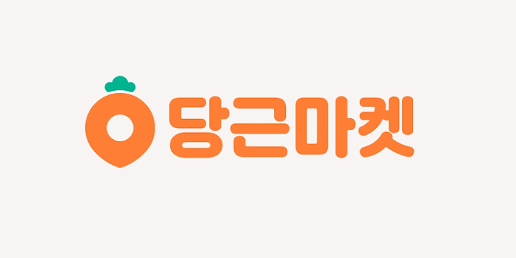

월급 122건·연봉 3건은 단기 일자리와 기간이 달라 핵심 표본에서 제외했습니다.
CAMPUS DATA STORY · 2026
짧게 일하고
알차게 벌려면?
당근알바 공고 991건에서
단기 비교 대상 866건을 살펴봅니다
⏱ 짧은 근무₩ 시급 비교⌂ 동네 일거리
공고에서 찾은 대학생의 하루 알바 탐색법

데이터로 보는동네 알바
01 / WHAT WE ASKED
대학생의 빈 시간,
어떤 알바가 효율적일까?
높은 시급, 짧은 근무, 실제로 구할 수 있는 공고 수를 함께 살펴봅니다.
991URL 기준 고유 공고전체 수집 991 · 단기 분석 866✳
⌕
17개 검색어청소·동행·반려동물·심부름·웨이팅 등
▦
2026.05.07–10.02약 5개월간 수집한 게시 시점
⌂
서울 740 · 부산 251지역 검색으로 모은 공고
※ 수집 공고 991건 중 월급 122건·연봉 3건은 단기 일자리 분석에서 제외했습니다. 검색 결과 표본이며 당근 전체 알바 시장의 전수조사는 아닙니다.
02 / HOW WE COMPARE
단기 알바만 보려고
월급·연봉 125건은 뺐어요
수집 991건에서 단기 공고 866건을 정하고, 보수와 시간을 비교할 수 있는 표본을 더 추렸습니다.
A
전체 수집 공고URL 중복 제거
991
B
단기 분석 대상시급 477 + 건별 332 + 일급 57
866
C
시급 비교 가능시급 477 + 시간 확인 일급 52
529
D
4시간 이하시간 확인 376건 중 짧은 근무
171
건별 332건은 시간 정보가 없어 분리했습니다. 일급 57건 중 52건만 시간당 금액을 계산했습니다.
휴게·이동·준비시간과 업무 난이도는 알 수 없습니다. 검색어 공고가 겹치고 ‘쉽다’는 기록도 없습니다.
대표값평균 + 중앙값·짧은 근무376건 중 ≤ 4시간 171건·기준2026 최저시급 10,320원
※ 공고에 적힌 제안 금액을 비교한 기술통계입니다. 실제 계약·지급액이나 최저임금법 위반 여부를 판정하지 않습니다.
03 / PAY UNITS
단기 공고 866건 중
38%는 건별 보수
월급·연봉을 제외하고 보니, 시급·건별·일급 세 가지 단기 보수 형태로 나뉩니다.
시급
477건55.1%
건별
332건38.3%
일급
57건6.6%
866단기 공고단기 분석에서 제외
월급 122 · 연봉 3
월급 122 · 연봉 3
핵심
단기 표본 10건 중 약 4건은 건별 보수예요. 작업시간을 몰라 시급과 직접 순위를 매길 수 없습니다.
※ 991건을 수집했고, 그중 단기 보수 공고 866건(시급·건별·일급)으로 핵심 분석을 진행했습니다. 검색어별 공고는 서로 겹칠 수 있습니다.
04 / WHAT KIND OF WORK?
동네 알바는 크게
집안일·돌봄·기술·심부름
검색어를 일거리 묶음으로 읽고, 대표 키워드의 시급 중앙값과 건당 금액을 비교했습니다.
집안일 · 이동
청소 · 이삿짐 · 가구 · 침대 · 운반 · 조립 · 폐기물청소 시급12,000원중앙값 · n=75
청소 건별50,000원중앙값 · n=25
돌봄 · 동행
반려동물 · 고양이 · 펫시팅 · 시터 · 동행반려동물 돌봄15,000원중앙값 · n=58
고양이16,000원중앙값 · n=28
기술 · 수리
수리 · 조립 · 간단 설치 등수리 시급16,389원중앙값 · n=18
수리 건별40,000원중앙값 · n=58
심부름 · 이색 일
심부름 · 벌레 · 웨이팅심부름 시급13,000원중앙값 · n=11
웨이팅 시급12,000원중앙값 · n=4
※ 공고는 여러 검색어에 중복될 수 있습니다. 키워드 묶음의 공고 수를 더해 전체 건수로 해석하지 않았으며, 시급·건별 보수도 각각 중앙값으로 분리했습니다.
05 / WAGE CHECK
비교 가능한 공고의
시급 중앙값은 14,000원
평균보다 중앙값을 먼저 볼게요. 몇 개의 높은 금액이 전체 인상을 끌어올릴 수 있기 때문입니다.
시급 분포 요약n = 529
최저시급
10,320원
10,320원
1사분위
12,000원
12,000원
중앙값
14,000원
14,000원
평균
15,815원
15,815원
3사분위
16,000원
16,000원
10,00012,00014,00016,00018,000원
최저시급 대비중앙값 +35.7%광고된 금액 기준의 단순 비교
98.7%최저시급 이상
529건 중 522건이
10,320원 이상으로 나타났어요.
7건은 공고상 시급이 기준 미만
공고 금액만 비교한 통계이며, 법 위반 여부를 판정한 결과는 아닙니다.
2026년 법정 최저임금: 시급 10,320원 · 고용노동부 발표 자료
06 / SHORT SHIFT
4시간 이하 공고도
중앙값 15,000원
짧은 근무시간이 명시된 171건을 따로 봤습니다.
2026 최저시급
10,320원
4시간 이하 중앙값
15,000원
4시간 이하 평균
15,142원
최저시급 대비 +45.3%
171건
● ● ● ● ● ● ● ● ● ● ● ● ● ● ● ● ● ● ● ● ● ● ● ● ● ● ● ● ● ● ● ● ● ● ● ● ● ● ● ● ● ● ● ● ● ● ● ● ● ● ● ● ● ● ● ● ● ● ● ● ● ● ● ● ● ● ● ● ● ● ● ● ● ● ● ● ● ● ● ● ● ●
171건 모두
시급 환산액이
최저시급 이상
! 시작·종료 시간이 명시된 공고만 포함합니다. 실제 작업 강도나 전체 소요시간을 뜻하지 않아요.
07 / SHORT-SHIFT TYPES
짧은 근무 그룹은
반려동물·침대·시터가 눈에 띄어요
4시간 이하 공고 중 표본 10건 이상인 검색 키워드의 시급 환산 중앙값입니다.
중앙 시급 · 4시간 이하 공고n 표시 = 공고 수
침대
15,500원n=16
반려동물 돌봄
15,000원n=22
시터
15,000원n=13
동행
14,000원n=27
이삿짐
12,500원n=15
청소
12,000원n=30
0원5,000원10,000원15,000원
✳
참고만
높은 시급만큼 일의 조건도 달라요.
돌봄은 책임과 경험, 이삿짐은 체력·이동 조건을 함께 확인하세요.
참고만
※ 키워드 기반 분류라 검색어 그룹은 중복될 수 있습니다. 표본이 10건 미만인 키워드는 그래프에서 제외했습니다.
08 / LOOK BEYOND THE AVERAGE
눈에 띄는 고시급,
표본 수까지 같이 보기
건당이 아닌 시급 환산 공고에서도 키워드별 표본 크기는 크게 달랐습니다.
키워드별 시급 중앙값막대 끝 n = 시급 표본 수
펫시팅
28,000원n=7
수리
16,389원n=18
고양이
16,000원n=28
반려동물 돌봄
15,000원n=58
0원10,000원20,000원30,000원
평균의 함정 수리 평균은 25,742원, 중앙값은 16,389원 — 일부 높은 공고가 평균에 영향을 줄 수 있습니다.
※ 펫시팅 키워드의 전체 시급 표본 n=7이며, 4시간 이하 분석과는 다른 비교 집단입니다.
09 / PER TASK
건당 보수는 총액 비교까지만
시간이 적혀 있지 않은 공고는 시급으로 바꾸지 않고, 약속된 작업 1건의 금액으로만 봅니다.
₩건당 보수 공고 332건40,000원중앙값
평균보수와 중앙값의
차이를 함께 참고
키워드별 건당 보수 중앙값단위: 원 / n: 공고 수
청소
50,000n=25
가구
45,000n=39
수리
40,000n=58
침대
40,000n=43
이삿짐
30,000n=45
0원10,000원20,000원30,000원40,000원50,000원
≠
건당 50,000원 ≠ 시급 50,000원작업 시간 · 이동 · 준비 · 추가 비용 정보가 없어 시간당 수입은 계산할 수 없습니다.
10 / URGENT ≠ PREMIUM
급구라고 해서
시급까지 높진 않았어요
제목에 ‘급구·오늘·당일·지금’이 들어간 공고와 그 외 공고를 비교했습니다.
시급 환산 가능 공고의 평균각 집단의 중앙값도 표시
급구 표현 있음n=48 · 제목 기준
12,412원
급구 표현 없음n=481
16,155원
중앙값급구 12,192원vs그 외 15,000원
읽는 법
이 표본에서는 급구 표현 공고의 시급이 더 높지 않았습니다. 업무 종류·시간대 차이를 통제하지 않은 비교라 원인을 뜻하진 않아요.
※ 단기 표본의 급구 표현 59건 중 시급 비교 가능 48건, 그 외 807건 중 481건을 비교했습니다. 업무 종류·시간대를 통제하지 않은 표본 내 관찰입니다.
11 / THE QUEUEING GIG
한정판 오픈런에서
두쫀쿠 줄서기까지
요즘 화제의 줄서기 대행은 얼마일까요? CSV의 작은 표본과 최근 보도 사례를 나눠 봅니다.
우리 단기 표본 · 2026.05–10검색어 매칭 6건
6건
시급 비교 가능4건 · 중앙 12,000원
건별 보수2건 · 중앙 15,000원
월급·연봉을 제외한 단기 표본입니다. 검색어 결과에는 일반 매장 알바도 섞여 실제 줄서기는 6건보다 적을 수 있어요.
최근 보도 사례 · 2026.01한 건의 구인 글
30,000원 · 총액 제안
30명지원● ● ● ● ● ● ● ● ● ●
홍대 연말연초 줄서기 글 사례예요. 보도는 통상 시급이 최저임금 수준이고, 야외·성수기엔 웃돈이 붙을 수 있다고 전했습니다.
중앙일보 보도 원문 · 2026.01.05 ↗한정판 매장→인기 굿즈·두쫀쿠→식당·술집·베이커리웨이팅 수요의 확장
※ 사진은 AI로 재현한 예시이며 실제 매장·보도 사진이 아닙니다. 30,000원은 특정 날짜·시간대 구인 사례의 총액이며 시간당 시급이나 현재 평균 시세가 아닙니다. 웨이팅 중앙값도 시급 n=4·건별 n=2라 시장가를 대표하지 않습니다.
12 / RATE BY SEARCH TERM
검색어별 평균 시급,
중앙값과 표본도 함께
시급 비교가 가능한 공고를 검색어별로 묶었습니다. 높은 평균이 대표 시세라고 단정하지 않도록 중앙값도 나란히 봅니다.
평균 시급중앙 시급시급 비교 가능 표본만
검색어표본평균중앙값
청소7513,20912,000
당일급구8112,99912,000
이삿짐4416,62112,361
동행6715,11215,000
침대3116,45215,000
수리1825,74216,389
반려동물 돌봄5816,28715,000
가구2616,89715,000
고양이2816,26116,000
검색어표본평균중앙값
시터3915,33315,000
운반1313,64612,500
조립1420,48013,500
폐기물1123,68215,000
심부름1113,26613,000
펫시팅730,11428,000
웨이팅411,70512,000
벌레220,00020,000
※ 단위: 원. ‘당일급구’는 업무 유형이 아닌 검색어입니다. 표본 10건 미만은 작은 표본이라 시세 판단에 특히 주의하세요. 검색어 간 공고가 겹칠 수 있습니다.
13 / A STUDENT'S SHORTLIST
내 상황에 맞게
후보를 좁혀 보세요
이 데이터로 뽑은 건 ‘정답’이 아니라, 공고를 열어볼 출발점입니다.
01
🐾짧은 근무 + 돌봄 관심
반려동물 돌봄
중앙 15,000원4시간 이하 n=22돌봄 경험·동물 특성 확인
02
🗣️대화·동행 업무 선호
동행 키워드
중앙 14,000원4시간 이하 n=27장소·이동·업무 범위 확인
03
🧰기술 경험을 살리고 싶다면
수리 키워드
전체 중앙 16,389원시급 표본 n=18가능 작업·공구·책임 범위 확인
지원 전 5초 체크실제 작업시간→이동시간→준비물→책임·경력→지급 기준
※ 후보는 광고 시급과 표본 수를 기준으로 한 탐색 가이드입니다. 쉬움·안전성·실제 시급을 보증하지 않습니다.
14 / TAKEAWAY
알찬 알바는
시급 하나로
정해지지 않아요.
공고 시급에 실제 근무·이동 시간과 일의 조건까지 더해 비교해 보세요.
짧은 시간 · 괜찮은 보수 ·내가 감당할 수 있는 업무
세 가지가 만나는 공고가
나에게 가장 효율적인 알바예요.
분석을 읽을 때 기억할 점!
- 광고 금액실제 계약·지급액과 다를 수 있음
- 키워드 표본검색어별 분류라 실제 업무와 다를 수 있음
- 쉬움·강도CSV에 직접 기록되지 않음
- 시간 계산이동·준비시간은 포함되지 않음
NEXT ANALYSIS공고 본문에서 업무·경력·조건을
분류하고, 실제 소요시간을 더해 보기시급 × 일의 조건까지
분류하고, 실제 소요시간을 더해 보기시급 × 일의 조건까지